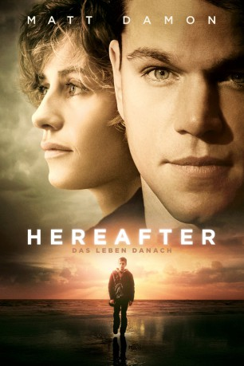

#6483 Hereafter - Das Leben danach
Alternativ: Hereafter
Auszeichnungen: für 1 Oscars nominiert
 
 IMDB-Wertung: 6.5 / 10
IMDB-Wertung: 6.5 / 10  Metascore: 0
Metascore: 0 
Die französische Fernsehjournalistin Marie wird beim Urlaub in Thailand vom Tsunami überrascht, von der Flutwelle mitgezogen und ertrinkt - bis sie nach mehreren Minuten ins Leben zurückgerissen wird. Die Zwillinge Marcus und Jason in London müssen ihr Leben in London meistern, weil ihre alleinerziehende Mutter sie zwar liebt, aber wegen ihrer Drogenabhängigkeit nicht dazu in der Lage ist - bis ein Unfall ihre Existenz völlig auf den Kopf stellt. Der Fabrikarbeiter George in San Francisco kann von Kindesbeinen an mit den Toten kommunizieren, was es ihm unmöglich macht, normale Beziehungen zu führen. Auf verblüffende Weise streben die Figuren aufeinander zu.
Jahr: 2010
Dauer: 129 Minuten
FSK: 12
Land: USA Studio: Warner Bros.Tonspuren: DD5.1 - ,
Untertitel: Deutsch,
Auflösung: 1080p (1920x800) Größe: 7034 MB
Genre: Drama, Fantasy
Regisseur:  Clint Eastwood
Clint Eastwood
Drehbuch: Peter Morgan
Soundtrack:
Darsteller:
 Cécile De France als Marie Lelay
Cécile De France als Marie Lelay Thierry Neuvic als Didier
Thierry Neuvic als Didier Jay Mohr als Billy
Jay Mohr als Billy Richard Kind als Christos
Richard Kind als Christos Matt Damon als George Lonegan
Matt Damon als George Lonegan- Charlie Creed-Miles als Photographer
- Frankie McLaren als Marcus / Jason
- George McLaren als Marcus / Jason
- Lyndsey Marshal als Jackie
- Rebekah Staton als Social Worker
 Franz Drameh als Teenager
Franz Drameh als Teenager Mylène Jampanoï als Reporter Jasmine
Mylène Jampanoï als Reporter Jasmine- Stéphane Freiss als Guillaume Belcher
 Steve Schirripa als Cooking Teacher 'Carlo'
Steve Schirripa als Cooking Teacher 'Carlo' Bryce Dallas Howard als Melanie
Bryce Dallas Howard als Melanie Jenifer Lewis als Candace
Jenifer Lewis als Candace Andy Gathergood als Jackie's Friend
Andy Gathergood als Jackie's Friend Jean-Yves Berteloot als Publishing Executive Michael
Jean-Yves Berteloot als Publishing Executive Michael- Niamh Cusack als Foster Mother
- George Costigan als Foster Father
- Surinder Duhra als Islamic Teacher
- Audrey Brisson als Hospice Receptionist
- Marthe Keller als Dr. Rousseau
- Charlie Holliday als Union Rep
- John Nielsen als Factory Supervisor
- Mathew Baynton als College Receptionist
- Paul Antony-Barber als Nigel
 Meg Wynn Owen als Mirror Lady
Meg Wynn Owen als Mirror Lady Selina Cadell als Mrs. Joyce
Selina Cadell als Mrs. Joyce Céline Sallette als Secretary
Céline Sallette als Secretary- Joanna Croll als Tour Guide
 Derek Jacobi als Derek Jacobi
Derek Jacobi als Derek Jacobi- Tim Fitzhigham als Bearded Author
- Chloe Bale als Hotel Receptionist
 Andy Arness als Management Rep. , uncredited
Andy Arness als Management Rep. , uncredited Fileena Bahris als Tsunami Survivor , uncredited
Fileena Bahris als Tsunami Survivor , uncredited Hélène Cardona als Angel , uncredited
Hélène Cardona als Angel , uncredited- Fiona Dwyer als Voice , uncredited
- Carl Marino als Airport Couple , uncredited
- Ilona Marino als Airport Couple , uncredited
 Erick Vinther als Gourmet Cook Student , uncredited
Erick Vinther als Gourmet Cook Student , uncredited James D. Weston II als Presidio Jogger , uncredited
James D. Weston II als Presidio Jogger , uncredited- Cyndi Mayo Davis als Island Hotel Clerk
- Lisa Griffiths als Stall Owner
- Jessica Griffiths als Island Girl
- Ferguson Reid als Rescuer
- Derek Sakakura als Rescuer
- Declan Conlon als Social Worker
- Marcus Boyea als Teenager
- Tex Jacks als Teenager
Datei: X:\2010(G-M)\Hereafter - Das Leben danach (2010, FSK12, 1920x800).mkv seit 27.06.2017
Festplatte: HD 2010(G-Z)-2011(A-F)
 Es gibt insgesamt 85 Filme in der Gruppe '2010(G-M)'
Es gibt insgesamt 85 Filme in der Gruppe '2010(G-M)'